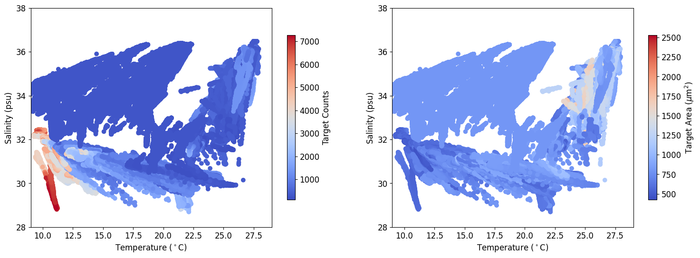

# import the ifcb module and other required modules
import glob
import ifcb
import numpy as np
import os
import pandas as pd
import matplotlib.pyplot as plt
%matplotlib inline
data_dir = ifcb.DataDirectory(os.path.join(os.path.expanduser('~'), 'ooi/cruise_data/pioneer-mab/Pioneer-20_AR82_2024-04-01/IFCB/discrete/'))
sample_bin = data_dir['D20240415T215238_IFCB206']
im = sample_bin.roi_file.get_image(562)
plt.imshow(im)
<matplotlib.image.AxesImage at 0x7fe0366e7b50>
# raw data directory with the ADC files currently being telemetered to shore during the deployment
data_dir = os.path.join(os.path.expanduser('~'), 'ooi/uncabled/CP10CNSM/D00001/cg_data/dcl27/plims/D20240[456789]*.adc')
files = sorted(glob.glob(data_dir)) # listing of all the ADC files
print("Found {} files".format(len(files)))
# note, the file glob used above is constructed to deliberately exclude burn-in (aka parking lot) data
Found 812 files
%%time
# pull out the adc data from each adc file into a pandas dataframe and add the sampling date/time extracted from the file name
columns = 'TRIGGER ADC_TIME PMT_A PMT_B PMT_C PMT_D PEAK_A PEAK_B PEAK_C PEAK_D TIME_OF_FLIGHT GRAB_TIME_START GRAB_TIME_END ROI_X ROI_Y ROI_WIDTH ROI_HEIGHT START_BYTE COMPARATOR_OUT START_POINT SIGNAL_LENGTH STATUS RUN_TIME INHIBIT_TIME'.lower().split(' ')
columns = {index: value for index, value in enumerate(columns)}
full = [] # temporary list to hold the dataframes from each sampling run
summary = [] # summary results from each sampling run we can later merge with
for file in files:
# load the adc data and use the sample id to set the sampling time
adc = ifcb.data.adc.AdcFile(file)
sample_id = adc.lid
sample_time = pd.Timestamp(sample_id[1:-8], tz='UTC')
# convert the data to a pandas dataframe, rename the columns and drop any size 0 triggers
adc = adc.to_dataframe()
adc.rename(columns=columns, inplace=True)
adc = adc[adc['roi_width'] > 0]
# add the sample id and time that we can use later in grouping the data
adc.insert(1, 'sample_id', sample_id)
adc.insert(3, 'sample_time', sample_time)
# append the results to the full and summary lists
full.append(adc)
area = (adc['roi_width'] / 2.7) * (adc['roi_height'] / 2.7) # rough estimate of target area in um^2 (~2.7 pixels/um)
summary.append([sample_time, sample_id, len(adc), np.mean(area)])
CPU times: user 3.95 s, sys: 528 ms, total: 4.48 s
Wall time: 31 s
%%time
# convert the full and summary lists into pandas dataframes
full = pd.concat(full, ignore_index=True)
full.index.rename('samples', inplace=True)
summary = np.array(summary)
summary = pd.DataFrame(summary[:, 1:], index=summary[:, 0], columns=['sample_id', 'target_counts', 'target_area'])
summary.index.rename('time', inplace=True)
CPU times: user 151 ms, sys: 101 ms, total: 252 ms
Wall time: 251 ms
%%time
grps = full.groupby('sample_id')
for grp in grps:
pass
CPU times: user 177 ms, sys: 68.6 ms, total: 245 ms
Wall time: 244 ms
grp[1]
| trigger | sample_id | adc_time | sample_time | pmt_a | pmt_b | pmt_c | pmt_d | peak_a | peak_b | ... | roi_y | roi_width | roi_height | start_byte | comparator_out | start_point | signal_length | status | run_time | inhibit_time | |
|---|---|---|---|---|---|---|---|---|---|---|---|---|---|---|---|---|---|---|---|---|---|
| samples | |||||||||||||||||||||
| 1375669 | 1 | D20240922T042446_IFCB199 | 12.141865 | 2024-09-22 04:24:46+00:00 | -0.000998 | 0.011843 | -0.001829 | -0.001004 | 0.009820 | 0.281713 | ... | 803 | 80 | 58 | 0 | 0 | 0 | 0 | 0 | 12.164696 | 0.092693 |
| 1375670 | 2 | D20240922T042446_IFCB199 | 13.948682 | 2024-09-22 04:24:46+00:00 | 0.084343 | 0.021247 | -0.002023 | -0.001178 | 1.365922 | 0.261614 | ... | 387 | 88 | 50 | 4640 | 0 | 0 | 0 | 0 | 13.970365 | 0.176736 |
| 1375671 | 3 | D20240922T042446_IFCB199 | 15.010232 | 2024-09-22 04:24:46+00:00 | -0.000901 | 0.018660 | -0.001870 | -0.001065 | 0.009816 | 0.359943 | ... | 523 | 72 | 42 | 9040 | 0 | 0 | 0 | 0 | 15.031645 | 0.259551 |
| 1375672 | 4 | D20240922T042446_IFCB199 | 19.877021 | 2024-09-22 04:24:46+00:00 | 0.008152 | 0.012415 | -0.001879 | -0.001107 | 0.223012 | 0.204825 | ... | 699 | 88 | 50 | 12064 | 0 | 0 | 0 | 0 | 19.899149 | 0.343255 |
| 1375673 | 5 | D20240922T042446_IFCB199 | 26.224402 | 2024-09-22 04:24:46+00:00 | -0.000285 | 0.002202 | -0.001668 | -0.000867 | 0.009592 | 0.005474 | ... | 259 | 80 | 50 | 16464 | 0 | 0 | 0 | 0 | 26.246721 | 0.427322 |
| ... | ... | ... | ... | ... | ... | ... | ... | ... | ... | ... | ... | ... | ... | ... | ... | ... | ... | ... | ... | ... | ... |
| 1375948 | 282 | D20240922T042446_IFCB199 | 1187.321535 | 2024-09-22 04:24:46+00:00 | -0.001272 | 0.000752 | -0.002159 | -0.001251 | 0.010190 | 0.005872 | ... | 355 | 88 | 50 | 1638416 | 0 | 0 | 0 | 0 | 1187.358889 | 23.496810 |
| 1375949 | 283 | D20240922T042446_IFCB199 | 1192.985101 | 2024-09-22 04:24:46+00:00 | -0.001350 | 0.001310 | -0.002194 | -0.001268 | 0.010202 | 0.005875 | ... | 499 | 64 | 34 | 1642816 | 0 | 0 | 0 | 0 | 1193.023194 | 23.580035 |
| 1375950 | 284 | D20240922T042446_IFCB199 | 1196.085505 | 2024-09-22 04:24:46+00:00 | 0.005088 | 0.012646 | -0.002367 | -0.001363 | 0.158858 | 0.244203 | ... | 627 | 96 | 66 | 1644992 | 0 | 0 | 0 | 0 | 1196.123333 | 23.662674 |
| 1375951 | 285 | D20240922T042446_IFCB199 | 1196.192423 | 2024-09-22 04:24:46+00:00 | -0.001560 | 0.004991 | -0.002303 | -0.001356 | 0.010369 | 0.128841 | ... | 779 | 72 | 42 | 1651328 | 0 | 0 | 0 | 0 | 1196.231944 | 23.747194 |
| 1375952 | 286 | D20240922T042446_IFCB199 | 1198.181690 | 2024-09-22 04:24:46+00:00 | -0.001723 | 0.014204 | -0.002348 | -0.001406 | 0.010428 | 0.366859 | ... | 323 | 72 | 58 | 1654352 | 0 | 0 | 0 | 0 | 1198.219306 | 23.829661 |
284 rows × 26 columns
summary
| sample_id | target_counts | target_area | |
|---|---|---|---|
| time | |||
| 2024-04-03 14:16:09+00:00 | D20240403T141609_IFCB199 | 3666 | 752.229549 |
| 2024-04-03 15:26:20+00:00 | D20240403T152620_IFCB199 | 4443 | 650.288381 |
| 2024-04-03 18:25:14+00:00 | D20240403T182514_IFCB199 | 4073 | 621.513348 |
| 2024-04-03 21:25:11+00:00 | D20240403T212511_IFCB199 | 6864 | 575.412882 |
| 2024-04-04 00:25:11+00:00 | D20240404T002511_IFCB199 | 7272 | 570.638079 |
| ... | ... | ... | ... |
| 2024-09-21 12:24:45+00:00 | D20240921T122445_IFCB199 | 1056 | 703.02095 |
| 2024-09-21 16:24:45+00:00 | D20240921T162445_IFCB199 | 1661 | 640.211286 |
| 2024-09-21 20:24:44+00:00 | D20240921T202444_IFCB199 | 259 | 756.532194 |
| 2024-09-22 00:24:43+00:00 | D20240922T002443_IFCB199 | 300 | 963.365341 |
| 2024-09-22 04:24:46+00:00 | D20240922T042446_IFCB199 | 284 | 801.081937 |
812 rows × 3 columns
# import a utility used to load data from the kdata directory
from ooi_data_explorations.common import load_kdata
# import utilites used to re-organize and prepare the CTDBP and FLORT data for further work
from ooi_data_explorations.uncabled.process_ctdbp import ctdbp_datalogger
from ooi_data_explorations.uncabled.process_flort import flort_datalogger
%%time
ctd = load_kdata('CP10CNSM', 'RID27', '03-CTDBPC000', 'telemetered', 'ctdbp_cdef_dcl_instrument', '*.nc')
ctd = ctdbp_datalogger(ctd)
Downloading 17 data file(s) from the local kdata directory
Downloading 17 data file(s) from the local kdata directory
Loading and Processing Data Files: 100%|██████████| 17/17 [00:04<00:00, 4.05it/s]
Merging the data files into a single dataset
CPU times: user 185 ms, sys: 159 ms, total: 344 ms
Wall time: 4.47 s
%%time
flr = load_kdata('CP10CNSM', 'RID27', '02-FLORTD000', 'telemetered', 'flort_sample', '*FLORT*.nc')
flr = flort_datalogger(flr, burst=True)
# using burst-averaging here with the ECO Triplet data (sampled at 1 Hz for 3 minutes every 15 minutes) to reduce data volume
Downloading 18 data file(s) from the local kdata directory
Downloading 18 data file(s) from the local kdata directory
Loading and Processing Data Files: 100%|██████████| 18/18 [00:14<00:00, 1.21it/s]
Merging the data files into a single dataset
CPU times: user 2h 31min 53s, sys: 4.12 s, total: 2h 31min 57s
Wall time: 2min 45s
%%time
# create a merged data set, copying the source CTD data
merge = ctd.copy()
# interpolate the chlorophyll, FDOM and optical backscatter into the CTD record and add metadata
merge['estimated_chlorophyll'] = ('time', np.interp(ctd['time'], flr['time'], flr.estimated_chlorophyll))
merge['estimated_chlorophyll'].attrs = flr.estimated_chlorophyll.attrs
merge['fluorometric_cdom'] = ('time', np.interp(ctd['time'], flr['time'], flr.fluorometric_cdom))
merge['fluorometric_cdom'].attrs = flr.fluorometric_cdom.attrs
merge['optical_backscatter'] = ('time', np.interp(ctd['time'], flr['time'], flr.bback))
merge['optical_backscatter'].attrs = flr.bback.attrs
# interpolate the number of targets and estimated target size in the CTD record
smry = summary.to_xarray()
smry['time'] = pd.DatetimeIndex(smry['time'].values)
merge['target_counts'] = ('time', np.interp(ctd['time'], smry['time'], smry['target_counts'].astype(float)))
merge['target_counts'].attrs['units'] = 'counts'
merge['target_area'] = ('time', np.interp(ctd['time'], smry['time'], smry['target_area'].astype(float)))
merge['target_area'].attrs['units'] = 'um^2'
CPU times: user 17.3 ms, sys: 12 ms, total: 29.3 ms
Wall time: 28 ms
merge
<xarray.Dataset> Size: 66MB
Dimensions: (time: 593917)
Coordinates:
* time (time) datetime64[ns] 5MB 2...
Data variables: (12/19)
sea_water_pressure (time) float32 2MB 6.877 .....
sea_water_temperature_qartod_results (time) uint8 594kB 1 1 ... 1 1
internal_timestamp (time) float64 5MB 1.712e+0...
sea_water_pressure_qartod_executed (time) <U1 2MB '1' '1' ... '1'
sea_water_practical_salinity (time) float64 5MB 31.08 .....
sea_water_temperature_qartod_executed (time) <U1 2MB '1' '1' ... '1'
... ...
sea_water_practical_salinity_qartod_executed (time) <U1 2MB '1' '1' ... '1'
estimated_chlorophyll (time) float64 5MB 1.17 ......
fluorometric_cdom (time) float64 5MB 5.315 .....
optical_backscatter (time) float64 5MB 0.01295 ...
target_counts (time) float64 5MB 3.666e+0...
target_area (time) float64 5MB 752.2 .....
Attributes: (12/69)
node: RID27
comment: Data produced by the OOI M2M API and ...
publisher_email:
sourceUrl: http://oceanobservatories.org/
collection_method: telemetered
stream: ctdbp_cdef_dcl_instrument
... ...
geospatial_lon_resolution: 0.1
geospatial_vertical_units: meters
geospatial_vertical_resolution: 0.1
geospatial_vertical_positive: down
lat: 35.95097
lon: -75.13082plt.rcParams.update({'font.size': 10})
fig = plt.figure(figsize=(12, 18))
ax1 = plt.subplot(7, 1, 1)
plt.plot(merge.time, merge.sea_water_temperature)
plt.setp(ax1.get_xticklabels(), visible=False) # turn off x-axis ticklabels
plt.ylim([9, 29])
plt.ylabel('Temperature ($^\circ$C)')
ax2 = plt.subplot(7, 1, 2, sharex=ax1)
plt.plot(merge.time, merge.sea_water_practical_salinity)
plt.setp(ax2.get_xticklabels(), visible=False) # turn off x-axis ticklabels
plt.ylim([28, 38])
plt.ylabel('Salinity (psu)')
ax3 = plt.subplot(7, 1, 3, sharex=ax1)
plt.plot(merge.time, merge.estimated_chlorophyll)
plt.setp(ax3.get_xticklabels(), visible=False) # turn off x-axis ticklabels
plt.ylim([0, 3])
plt.ylabel('Chlorophyll ($\mu$g/L)')
ax4 = plt.subplot(7, 1, 4, sharex=ax1)
plt.plot(merge.time, merge.optical_backscatter)
plt.setp(ax4.get_xticklabels(), visible=False) # turn off x-axis ticklabels
plt.ylim([0, 0.03])
plt.ylabel('Backscatter (m$^-1$)')
ax5 = plt.subplot(7, 1, 5, sharex=ax1)
plt.plot(merge.time, merge.fluorometric_cdom)
plt.setp(ax5.get_xticklabels(), visible=False) # turn off x-axis ticklabels
plt.ylim([0, 8])
plt.ylabel('FDOM (ppm)')
ax6 = plt.subplot(7, 1, 6, sharex=ax1)
plt.plot(merge.time, merge.target_counts)
plt.setp(ax6.get_xticklabels(), visible=False) # turn off x-axis ticklabels
plt.ylim([0, 8000])
plt.ylabel('Target Counts')
ax6 = plt.subplot(7, 1, 7, sharex=ax1)
plt.plot(merge.time, merge.target_area)
plt.ylim([0, 3000])
plt.ylabel('Target Area ($\mu$m$^2$)')
plt.show()

plt.rcParams.update({'font.size': 12})
fig = plt.figure(figsize=(18, 6))
ax1 = plt.subplot(1, 2, 1)
plt.scatter(merge['sea_water_temperature'], merge['sea_water_practical_salinity'], c=merge['target_counts'], cmap='coolwarm')
cbar = plt.colorbar(shrink=0.75, label='Target Counts')
plt.xlabel('Temperature ($^\circ$C)')
plt.ylabel('Salinity (psu)')
plt.xlim([9, 29])
plt.ylim([28, 38])
plt.subplot(1, 2, 2, sharex=ax1, sharey=ax1)
plt.scatter(merge['sea_water_temperature'], merge['sea_water_practical_salinity'], c=merge['target_area'], cmap='coolwarm')
cbar = plt.colorbar(shrink=0.75, label='Target Area ($\mu$m$^2$)')
plt.xlabel('Temperature ($^\circ$C)')
plt.ylabel('Salinity (psu)')
plt.show()
